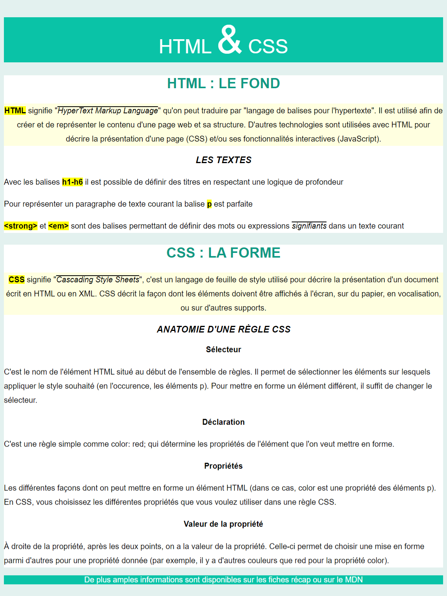

Aujourd'hui, on s'exerce à structurer une page Web avec HTML puis on explore quelques possibilités de CSS.
On a vu comment créer des pages HTML et comment écrire des directives CSS simples. Voyons ce qu'on peut faire avec tout ça.
css/style.css au fichier HTML html/index.htmlcss/style.css pour que le rendu de la page corresponde à l'image
Pour réaliser cette intégration HTML/CSS, vous allez avoir besoin d'apprendre ou de vous rappeler certaines notions :
<div><span>< et >, signes "inférieur" et "supérieur")